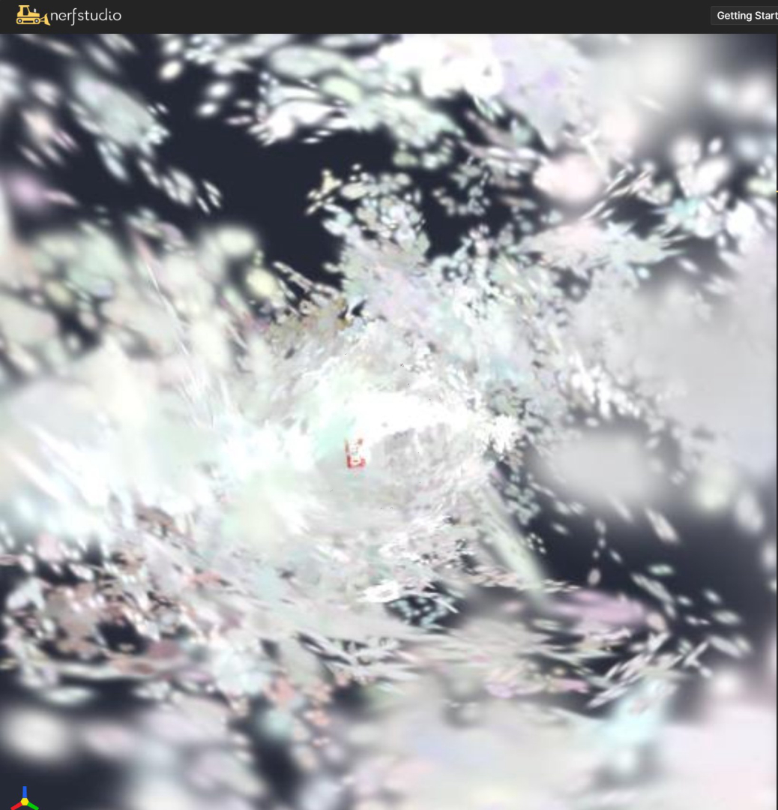

FLIP 矩阵。
但 nerfstudio/gsplat 用的是 OpenGL 约定（相机看 -Z），而 USD 位姿本来就是 -Z。
这一乘让所有相机转了 180°，物体跑到相机背后 → 渲染 accumulation 恒为 0 →
梯度全 0 → densify 永不触发 → 模型永远停在"半透明初始点云"。

唯一线索：结果永远是初始点云的样子。
这三项任一出现，训练就是死的。
07_build_init.py 是数据集构建器，不参与训练本身。它把 06 在 Isaac Sim 里抓到的原始数据，翻译成 nerfstudio 能吃的格式：
| 输入（06 的产物） | 07 做什么 | 输出（喂给训练） |
|---|---|---|
rgb_XXXX.npydepth_XXXX.npyintrinsics.json |
① 曝光归一化（让每帧亮度一致） ② 丢弃曝光异常帧 ③ 写相机位姿 transform_matrix④ 深度反投影 → 初始化点云 ⑤ 深度图另存（供 TSDF 用） |
images/*.pngtransforms.jsonpoints3D.ply ← 关键depth/*.npy
|
这次因为 07 产出的位姿本身就是错的，所以必须重跑 07 重新生成数据——光改训练参数是救不回来的。
| 约定 | 相机朝向 | 谁在用 |
|---|---|---|
| OpenGL / Blender | 相机看 -Z，+Y 上，+X 右 | nerfstudio、gsplat、USD |
| OpenCV / COLMAP | 相机看 +Z，+Y 下，+X 右 | COLMAP、多数 SfM 库 |
| USD 相机 | 相机看 -Z（同 OpenGL） | Isaac Sim |
关键：USD 和 nerfstudio 都用 -Z，本来不需要任何转换。
# 07_build_init.py（旧） FLIP = np.diag([1.0, -1.0, -1.0, 1.0]) # 注释: "USD(OpenGL) -> OpenCV(nerfstudio)" ... c2w_cv = look_at_c2w(eye, TARGET) @ FLIP # ← 多此一举，把相机转了 180°
diag(1,-1,-1) 会把 c2w 的 Y 列和 Z 列同时取反。
这不是"坐标约定转换"，而是把相机的朝向翻转了——
就像让人转身背对目标。结果物体全在相机背后。
# 保持 USD/OpenGL 原样，不做任何翻转 FLIP = np.eye(4) # no-op: USD/OpenGL c2w is what nerfstudio expects # 但反投影用的是 OpenCV 相机轴，同步翻转： pc = np.stack([x_, -y_, -z[valid], ones], axis=0) # OpenCV axes -> OpenGL(-Z fwd) pw = c2w_cv @ pc
| 检查项 | 修复前 | 修复后 |
|---|---|---|
| 点云质心落在视锥内的相机数 | 0 / 89 | 99 / 99 |
| 训练视角渲染 accumulation | 0.0 | 有内容 |
| 参数梯度（opacity/means） | 0.000e+00 | 非零 |
| densify（step 600 的 split 数） | 0 | 20,702 |
| 高斯数（step 700） | 23,785（冻结） | 181,328 |
| 初始点云点数 | 23,785 | 150,000 |
| Eval PSNR | 3.76（恒定） | 6.5 → 31 |
| 几何自检（x/y vs YCB 官方尺寸） | — | 误差 0.000 m |
这份清单的价值在于——下次遇到同类问题，按顺序排除，别重复踩。
| 怀疑对象 | 现象支持它吗 | 如何排除 |
|---|---|---|
| 误判 1gsplat JIT 编译 | viewer 黑屏、渲染空——很像 Lesson02 的编译问题 | 删除 build 目录用正确环境重编，仍然黑；且隔离测试证明 kernel 正常 |
| 误判 2显卡驱动 | RTX 5060 是 sm_120 新架构；驱动 610.62 + CUDA UMD 13.3 与 torch cu128 并存 | 驱动目录时间是 7 月（没在故障点更新）；重启无效；隔离测试梯度非零 → 排除 |
| 误判 3torch FileBaton 锁 | 进程挂着不动、CPU 不涨、无报错 | 确实是真实存在的坑（强杀进程留下的 lock），但它只解释"卡住在 Caching"，不解释"训练不收敛" |
| 误判 4cache_images 死锁 | 卡在 "Caching / undistorting images" | 改 cpu 缓存能过 Caching，但训练照样不更新参数 → 两个独立问题 |
| 误判 5orientation-method | 数据是 Z-up，nerfstudio 默认 Y-up；none 很可疑 |
改成 up 后 600 步，opacity 仍然 unique=1 → 排除 |
| 误判 6densify 阈值太高 | 初始点稀疏 → 梯度小 → 不触发 | 阈值降 20 倍（0.00001）后仍然 0 split → 排除 |
| 误判 7GradScaler 跳过 | loss 正常但参数不动，很像 scaler 检测到 inf/nan 后跳过 | grad_scaler enabled=False（本来就关着），且 backward 后梯度就是 0 → 排除 |
| 真凶相机朝向反 180° | accumulation=0、质心在相机背后（z=+0.93）、0/89 可见 | 直接投影验证：质心在 +Z 侧 → 相机背对 → 根因确认 |
Eval PSNR 是否恒定？（3.76 恒定 = 渲染是黑图） 日志里 "0 GSs split" 是否一直出现？（densify 死） ckpt 的 opacity 取值数是否 = 1？（参数从未更新）
# 用完全无关的干净数据（如官方 truck）跑几百步 # 能收敛 → 是你的数据问题；也不收敛 → 环境问题
构造 200 个大高斯放在相机正前方 2m 处 rasterization(...) → rgb mean 应 > 0 loss.backward() → 各参数 grad norm 应 > 0
pc = (xyz @ w2c[:3,:3].T) + w2c[:3,3] # nerfstudio 用 -Z 约定：可见意味着 pc[:,2] 为负 z = -pc[:,2] # 深度 u = fx*(pc[:,0]/z) + cx v = fy*(pc[:,1]/z) + cy inside = (z>0) & (0<=u<W) & (0<=v<H)若 inside 为 0 → 相机朝向/坐标约定错了。
o = model.get_outputs(train_cameras[0:1]) o["accumulation"].mean() # 0.0 = 一个高斯都没覆盖任何像素
| 数据来源 | 约定 | 喂给 nerfstudio 要不要转 |
|---|---|---|
| Isaac Sim / USD 相机 | OpenGL（看 -Z） | ❌ 不要转（直接写 c2w） |
| COLMAP | OpenCV（看 +Z） | nerfstudio 的 colmap parser 会自动处理 |
| nerfstudio transforms.json | OpenGL（看 -Z） | — |
深度反投影公式 X=(u-cx)z/fx | OpenCV 相机轴 | 算完要用 (X,-Y,-Z) 再乘 c2w |
强杀 CUDA 进程会在 gsplat_cuda/ 留下 lock 文件，
后续所有进程 import gsplat 时无限等待：CPU 不动、不报错、就是挂着。
del %LOCALAPPDATA%\torch_extensions\torch_extensions\Cache\py310_cu128\gsplat_cuda\lock
cache_images: gpu 时，datamanager 在线程池里做 .to(cuda)，
Windows 上偶发死锁（卡在 "Caching / undistorting images"）。
--pipeline.datamanager.cache-images cpu
| 指标 | 修复前 | 修复后 |
|---|---|---|
| Eval PSNR | 3.76（恒定） | 6.5 → 31.0 |
| Train PSNR 峰值 | 乱跳不上升（2.6~17） | 41.45 |
| 最终高斯数 | 23,785 | 403,745 |
| 初始点云 | 23,785 | 150,000 |
| 几何自检 | — | x/y 误差 0.000 m |